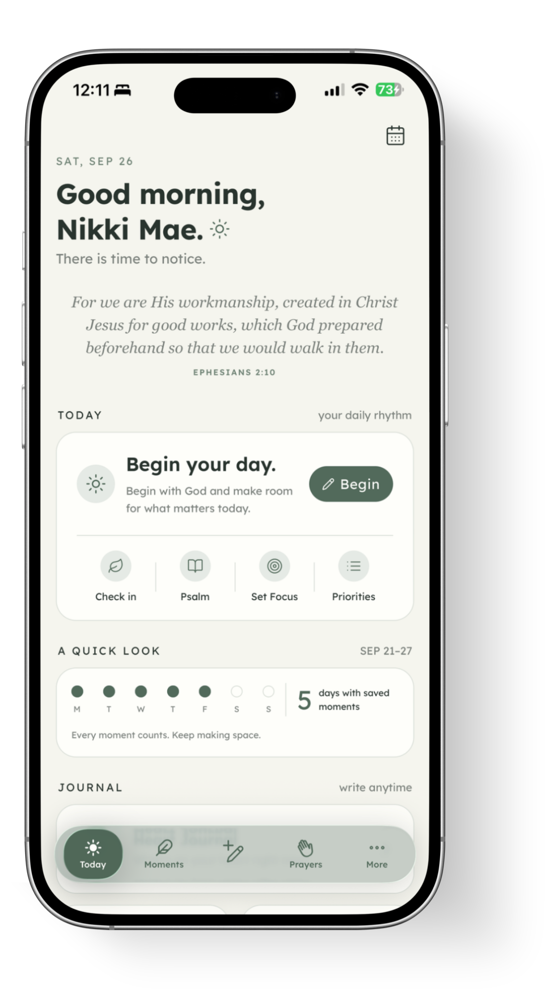
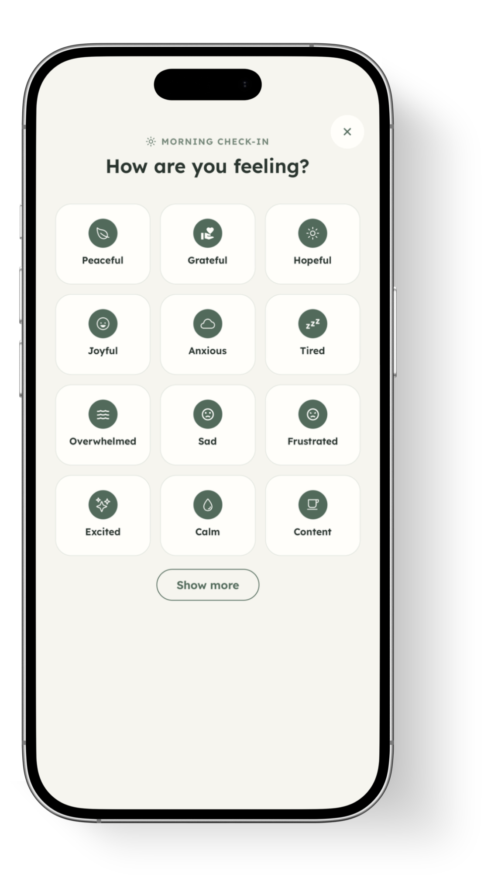
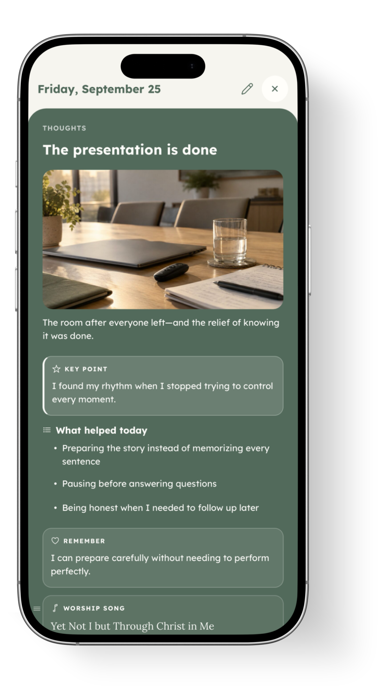
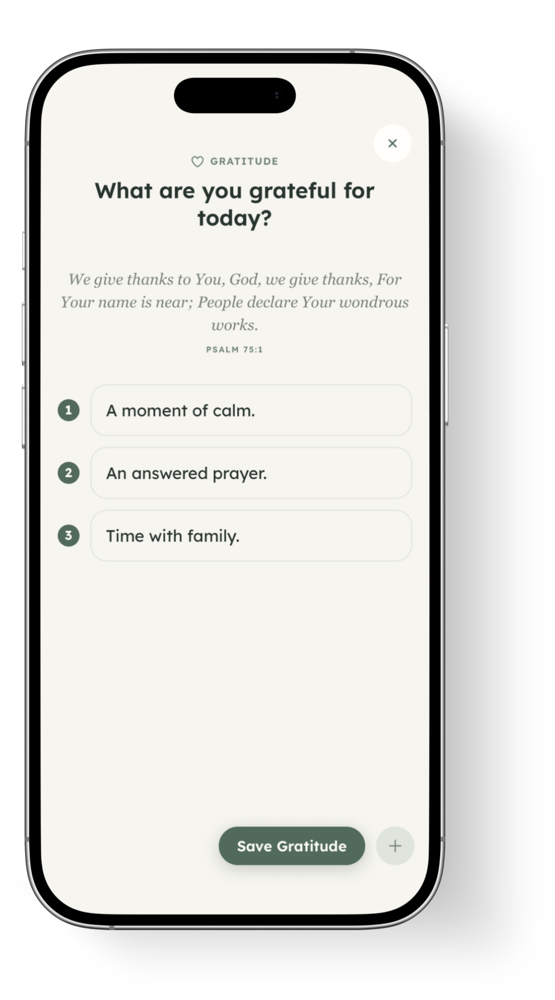
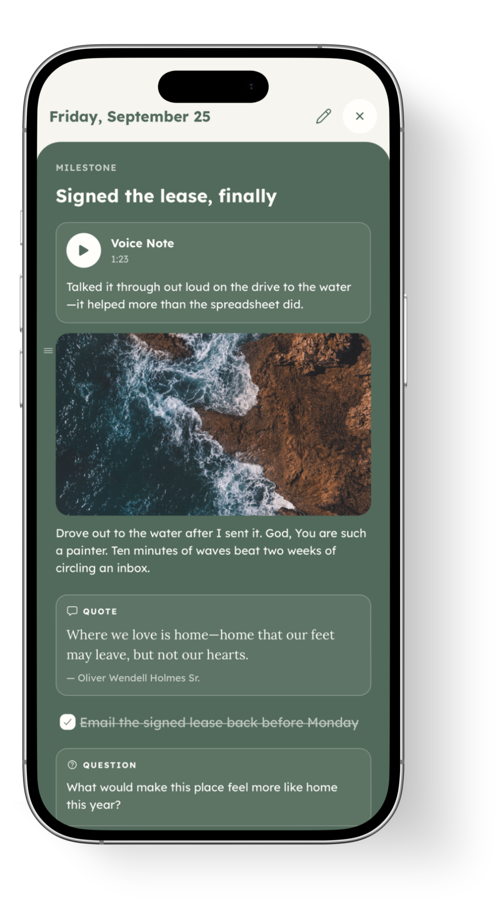
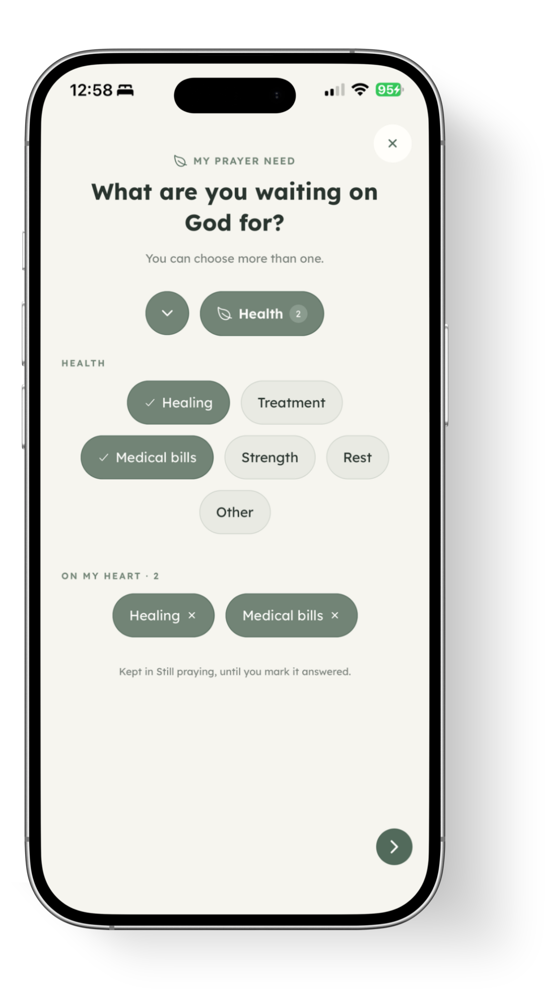
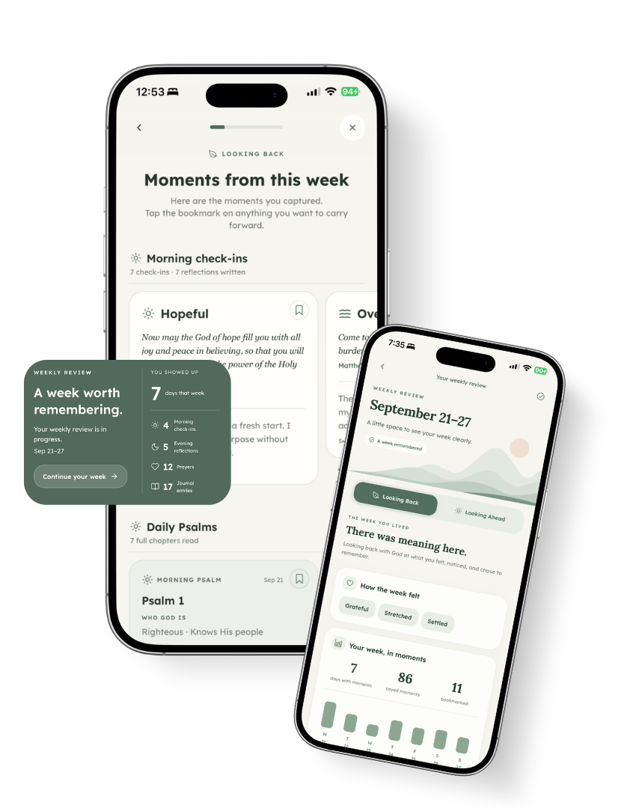
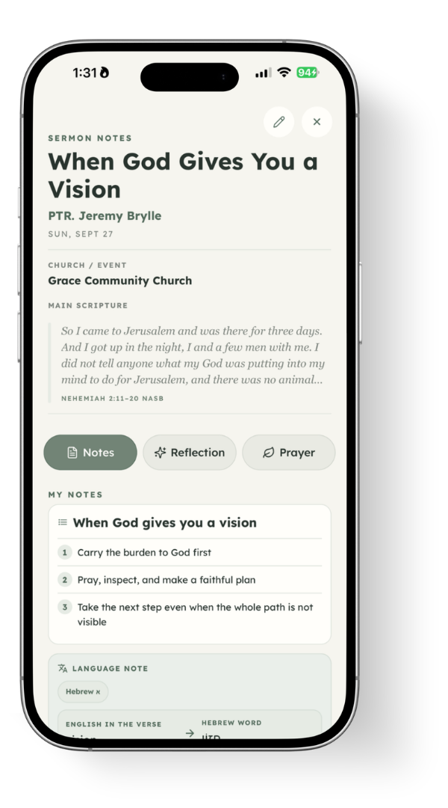

Know where to begin
Morning and Evening offer a simple starting point.
A journal thoughtfully made for Christian life.
A little structure when you need it. Room for your days, prayers, Scripture, and Sunday notes.

A blank page can be hard to start, and what you write often ends up scattered. Journal by siFia keeps it together and easy to return to.
Morning and Evening offer a simple starting point.
Keep days, prayers, Scripture, and sermon notes in one place.
Find old prayers, entries, and lessons when you need them.
Begin with guidance, write freely, and close the day your way.

Check in and name what matters.

Capture life as it happens.

Reflect, give thanks, and look ahead.
Use Morning, Evening, both, or neither. Journal is still yours.
Write freely about the workday, a conversation, a decision, or anything on your mind.
Prayer · Bible Study · Sermon Notes · Gratitude

Add updates or record an answer. The original prayer and what followed stay together.

See the entries, prayers, and moments you captured that week.
Reflect on what you actually recorded.

Keep the outline, words worth studying, and your response together.

Use what helps. Skip what doesn’t.
Start with guidance.Use Morning or Evening when it helps.
Write freely.Open any entry whenever you need it.
Choose your rhythm.Morning, Evening, both, or neither.
Early Access members can buy Journal by siFia at the founding price for a limited time after launch.
₱599 one time
No monthly subscription for the core app. We’ll email you before the offer ends.
Local store prices may vary.
Join Early AccessNo preorder or payment today.
Get launch news, testing invitations, and the founding price for Journal by siFia.
Founding price: ₱599 one time
We’ll remind you before the offer ends.
Join Early AccessFree to join. No preorder or payment.
Yes. It includes Scripture, prayer, gratitude, and Bible study—but it’s still a journal for everyday life, not a devotional-content app.
No. Use Morning, Evening, both, or neither. You can always write freely.
No. It gives you a place for Scripture notes and reflection, not a replacement for reading the Bible.
Journal by siFia starts with writing. siFia starts with a situation and guides you through reflection and Scripture.
The core app is a one-time purchase, not a subscription. The founding price is shown above for your region. Joining Early Access is free.
No. Testing is free, optional, and temporary. Not every volunteer will be selected.
No. You decide what to record. The app simply keeps the prayer and your updates together.
There’s no announced date yet. Join Early Access and we’ll email you when it’s ready.
A journal thoughtfully made for Christian life.
Join Early AccessNo preorder or payment.